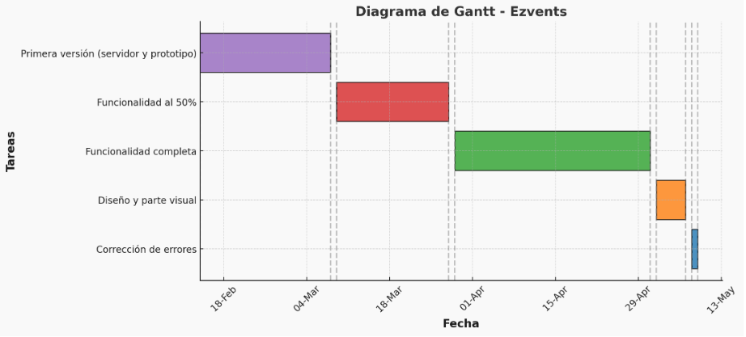

Nuestro proyecto consta de cinco funcionalidades principales. Para la repartición de trabajo, nos centrarenos principalmente en ellas. Cada miembro se ocupará principalmente de una de ellas, siendo distribuidas de la siguiente manera:
Otros aspectos generales de la implementación que no pertenecen a nuestras cinco funcionalidades, por ejemplo, la gestión de usuarios, serán resueltos entre todos.
En cuanto a los plazos, deberíamos tener lista una primera versión de la aplicación para el 08/03/2025. Ésta contará con la estructura del servidor y tendrá un pototipo funcional. A partir de este punto, nos comenzaremos a centrar en la funcionalidad, siendo capaces de completar aproximadamente el 50% de ella el 28/03/2025. Tendremos que haber completado toda la funcionalidad de la aplicación el 01/05/2025. Desde este día nos centraremos en la parte visual y el diseño, estará listo el 07/05/2025. Dejaremos dos días de margen para, en caso de tener errores, estar a tiempo de evitarlos antes del 09/05/2025, día de la entrega final de la aplicación. Esta información la podemos ver representada en la siguiente tabla:
| Tarea | Fecha límite |
|---|---|
| Primera versión (servidor y prototipo) | 08/03/2025 |
| Funcionalidad al 50% | 28/03/2025 |
| Funcionalidad completa | 01/05/2025 |
| Diseño y parte visual | 07/05/2025 |
| Corrección de errores | 09/05/2025 |
En el siguiente diagrama de Gantt podremos observar las tareas y sus plazos de manera más visual.
